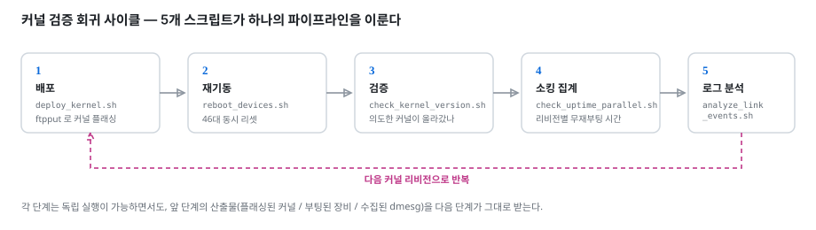
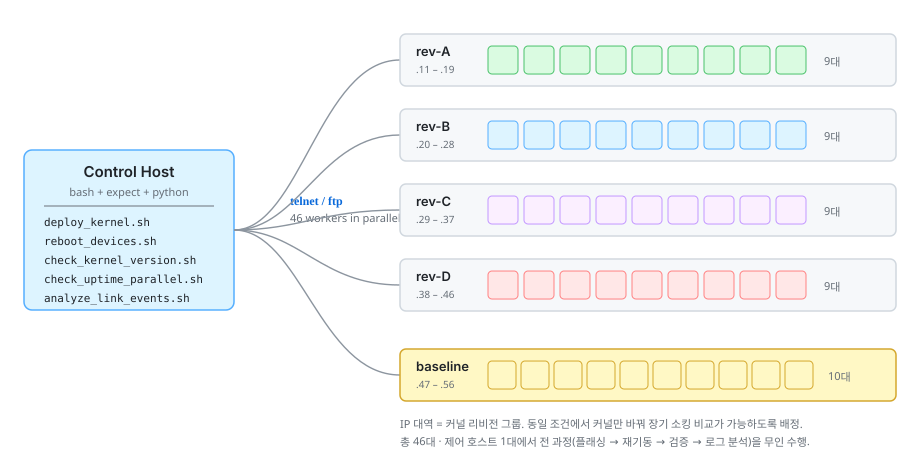
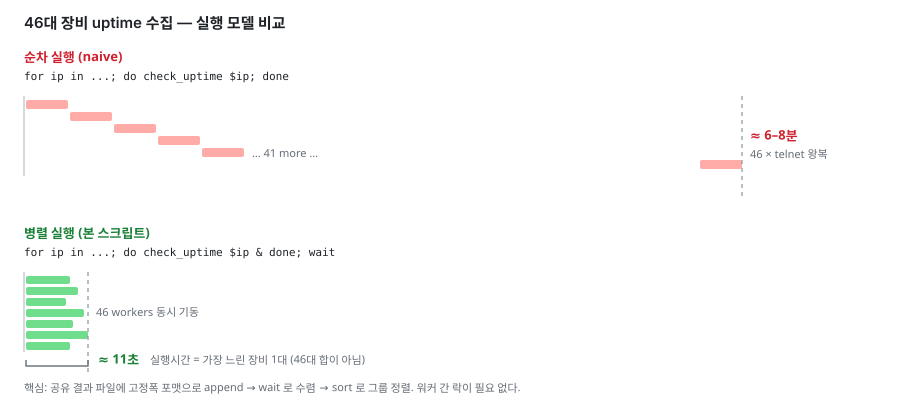
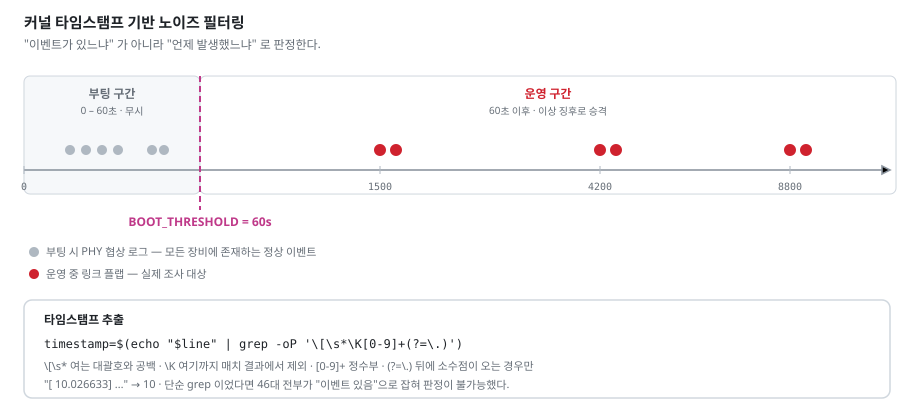
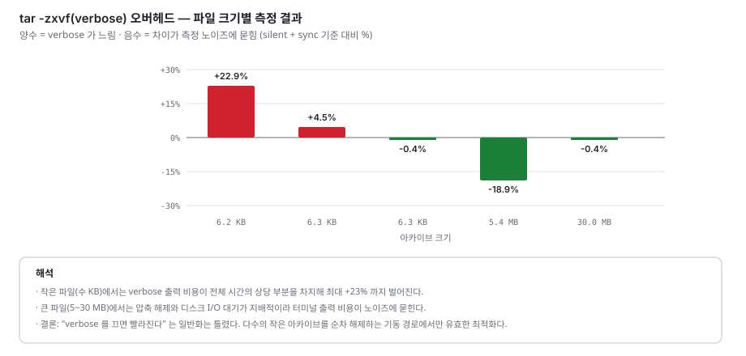
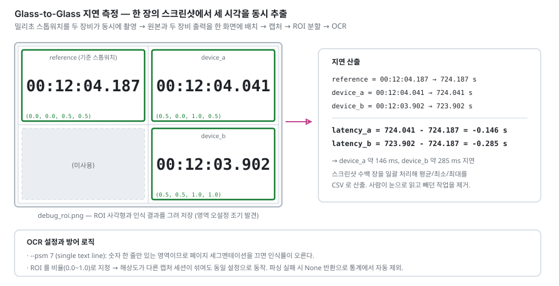

다수의 임베디드 리눅스 장비를 대상으로 커널 배포 · 안정성 검증 · 부하 인가 · 커널 로그 이상 탐지 · 성능 정량화를 무인으로 수행하기 위해 직접 작성한 Shell / Python 자동화 스크립트 모음입니다.
임베디드 장비의 펌웨어 안정성은 "한 대를 오래 켜 두고 지켜보는" 방식으로는 검증되지 않습니다. 간헐적 결함은 표본이 충분해야 드러나고, 커널을 바꿔 가며 비교하려면 동일 조건에서 여러 대를 동시에 돌려야 합니다.
그런데 대상 장비는 busybox 기반 최소 루트파일시스템이라
ssh도 stress-ng도 perf도 없고, 접속 수단은 telnet 뿐이었습니다.
가진 것만으로 검증 인프라를 만들어야 했고, 그 결과물이 이 저장소입니다.

스크립트 자체보다 "왜 이렇게 짰는가"에 무게를 두었습니다.
병렬화를 택한 이유, 노이즈를 걸러낸 기준, 측정 정확도를 위해 감수한 비용 —
각 스크립트 상단 주석과 아래 설명에 그 판단 근거를 남겼습니다.
각 폴더에는 해당 스크립트들을 설명하는 README.md가 함께 있습니다.
실제 업무에서 작성한 스크립트를 공개용으로 다듬은 것입니다. SoC 명칭 · 제품명 · 사내 네트워크 대역 · 자격증명은 모두 제거하거나 일반화했으며, 비밀번호와 호스트는 환경변수로 주입하도록 변경했습니다. 동작 로직과 설계 의도는 원본 그대로입니다.
커널 리비전별 장기 안정성을 비교하기 위해, IP 대역을 리비전 그룹에 배정하고 제어 호스트 한 대에서 전 과정을 무인 수행하도록 구성했습니다. IP 대역 = 커널 리비전이라는 규칙 하나로, 스크립트가 곧 실험 설계가 됩니다.

장비 한 대당 telnet 접속 · 로그인 · 명령 · 종료에 8~10초가 걸립니다. 46대를 순차로 돌면 6~8분. 그동안 첫 장비와 마지막 장비의 관측 시점이 벌어지고, 그 시차가 그대로 uptime 비교의 오차가 됩니다.

wait로 수렴 → 실행시간이 "가장 느린 1대" 수준으로 수렴한다.
46개 워커가 동시에 결과를 쓰지만 뮤텍스가 없습니다.
각 워커가 한 줄짜리 고정폭 레코드를 append 하고, 수렴 후 sort로 정렬합니다.
한 줄 쓰기는 사실상 원자적이고, 순서는 어차피 정렬로 결정되므로 락이 필요 없습니다.
# 워커: 고정폭 포맷으로 공유 파일에 append
printf "%-10s %-20s %s\n" "[$group]" "$ip" "$result" >> "$RESULT_FILE"
# 기동: 모두 백그라운드로 던지고
for i in {11..19}; do check_uptime "$PREFIX.$i" "rev-A" & done
for i in {20..28}; do check_uptime "$PREFIX.$i" "rev-B" & done
# ...
wait # 배리어 — 전원 수렴 대기
sort "$RESULT_FILE" # 그룹별 정렬 출력script -q -c "expect ..."로 감싸 의사 터미널을 확보했습니다.
tr -d '\r'로 정규화한 뒤 grep -E 'up +[0-9]'로 목표 라인만 뽑습니다.
| 파일 | 역할 | 포인트 |
|---|---|---|
deploy_kernel.sh |
커널 이미지 FTP 일괄 플래싱 | scp 가 없는 busybox 환경 → ftpput 사용, 장비별 성공/실패 즉시 판정 |
reboot_devices.sh |
46대 동시 재부팅 | 세션이 끊기므로 expect eof로 정상 종료 처리. 동일 시점 리셋이 비교 유효성의 전제 |
check_kernel_version.sh |
탑재 커널 빌드 번호 전수 검증 | #<빌드번호> SMP 패턴 매칭. 플래싱 실패 장비가 섞이면 A/B 자체가 무의미해진다 |
check_uptime_parallel.sh |
uptime 병렬 수집 · 그룹별 집계 | 46 워커 + wait + 공유 파일 append. 6~8분 → 11초 |
====== 전체 업타임 확인 결과 ======
그룹 IP 업타임
------------------------------------------------------------
[baseline] 192.168.10.47 up 6 days, 2:14, load average: 0.31, 0.28, 0.25
[baseline] 192.168.10.49 up 1 day, 4:02, load average: 0.44, 0.39, 0.35 <-- 재부팅 발생
[baseline] 192.168.10.52 접속 실패 / 무응답 <-- 장비 다운
[rev-A] 192.168.10.11 up 6 days, 2:15, load average: 0.32, 0.30, 0.28
[rev-B] 192.168.10.21 up 2 days, 8:41, load average: 0.38, 0.36, 0.33 <-- 재부팅 발생
...
============================ 완료 ============================
real 0m11.482s <-- 46대 전체전체 출력: samples/uptime_output.txt
간헐적 네트워크 단절이 보고되어 이더넷 링크 플랩을 의심했습니다.
그런데 46대 dmesg 를 grep "Link is" 로 훑으니
정상 장비를 포함해 전부가 걸렸습니다.
원인은 단순했습니다. 부팅 과정에서 PHY 가 링크를 협상하며 남기는 로그가 모든 장비에 공통으로 존재하기 때문입니다. 즉 판정 기준이 "이벤트가 있느냐"가 아니라 "언제 발생했느냐"여야 했습니다.

dmesg 의 [ 10.026633] 형태에서 정수부만 뽑아 임계값과 비교합니다.
PCRE 의 \K 와 lookahead 를 쓰면 후처리 없이 한 번에 숫자만 얻을 수 있습니다.
timestamp=$(echo "$line" | grep -oP '\[\s*\K[0-9]+(?=\.)')
# │ │ │ └─ 뒤에 소수점이 오는 경우만 (lookahead)
# │ │ └───────── 정수부
# │ └──────────── 여기까지는 매치 결과에서 제외
# └─────────────────── 여는 대괄호 + 공백
if [ -n "$timestamp" ] && [ "$timestamp" -gt "$BOOT_THRESHOLD" ]; then
# 부팅 이후 발생 → 이상 징후로 승격 출력
fi단순 grep 으로는 46대 전부가 "이벤트 있음"이었지만, 타임스탬프 필터링 후 실제 이상 장비 2대만 남았습니다. 조사 대상이 좁혀지자 원인 분석이 가능해졌습니다.
ip : 192.168.10.14
[192.168.10.14] *** 부팅 이후 LINK 이벤트 감지됨! ***
[ 4213.882910] eth-mac 40800000.eth eth0: Link is Down
[ 4216.104552] eth-mac 40800000.eth eth0: Link is Up - 100Mbps/Full - flow control off
[ 8871.339284] eth-mac 40800000.eth eth0: Link is Down
[ 8873.551017] eth-mac 40800000.eth eth0: Link is Up - 100Mbps/Full - flow control off
ip : 192.168.10.15
[192.168.10.15] OK - 부팅 이후 link 변동 없음
ip : 192.168.10.17
[192.168.10.17] WARNING: 로그 파일을 찾을 수 없습니다 (수집 실패)전체 출력: samples/link_events_output.txt · 스크립트: analyze_link_events.sh, collect_dmesg.exp
"한가할 때는 멀쩡한데 부하가 걸리면 죽는다" 유형의 결함을 재현하기 위한 도구입니다. 한 대만 괴롭혀서는 재현되지 않아, 여러 대에 동시에 부하를 인가할 필요가 있었습니다.
대상 장비에는 stress-ng 같은 표준 도구가 없습니다.
busybox 에 이미 있는 것만 조합해 각 자원별 부하를 구성했습니다.
| 자원 | 인가 방식 | 선택 이유 |
|---|---|---|
| CPU | dd if=/dev/urandom of=/dev/null |
/dev/zero가 아닌 urandom — 커널 PRNG 연산으로 실제 CPU 를 태운다 |
| Memory | mount -t tmpfs -o size=50M + dd |
tmpfs 는 물리 메모리를 점유한다. 파일 쓰기처럼 보이지만 실제로는 RAM 압박 |
| Network | iperf -s -t N & |
장비에 이미 포함된 도구 |
| 정지 | killall dd iperf |
일괄 정리 |
원격 부하 테스트의 최악은 제어 스크립트가 죽어서 장비에 부하가 영구히 남는 것입니다.
모든 명령을 dd ... & PID=$!; sleep N; kill $PID 형태로 보내
장비가 스스로 부하를 해제하도록 했습니다.
def build_command(load_type, duration):
if load_type == "cpu":
# urandom 읽기로 CPU 를 태운다. sleep 후 자기 자신이 kill.
return (f"dd if=/dev/urandom of=/dev/null & "
f"PID=$!; sleep {duration}; kill $PID")
if load_type == "mem":
# tmpfs 램디스크로 실제 물리 메모리를 점유
return (f"mkdir -p /tmp/ram; "
f"mount -t tmpfs -o size=50M tmpfs /tmp/ram; "
f"dd if=/dev/zero of=/tmp/ram/dummy bs=1M count=50; "
f"sleep {duration}; umount /tmp/ram")
장비별로 스레드를 띄우되 0.1초 간격으로 스태거링해 동시 접속 폭주를 완화하고,
각 워커를 try/except로 감쌌습니다.
한 대가 죽어도 나머지 19대의 테스트는 계속됩니다.
이미 장애가 난 장비는 -e 옵션으로 제외할 수 있습니다.
# 20대에 60초간 CPU 부하
./run_remote_stress.py root secret cpu -d 60
# 210, 219 를 제외하고 메모리 부하
./run_remote_stress.py root secret mem -d 120 -e 210 219
# 전체 정지
./run_remote_stress.py root secret stop스크립트: run_remote_stress.py
"장비 기동 시 모델 로딩이 느리다"는 정성적 보고를 숫자로 만들어야 했습니다.
기동 스크립트가 tar를 verbose 로 호출하고 있었는데,
느린 시리얼 콘솔에 파일명을 한 줄씩 찍는 비용이 유의미한지 확인이 필요했습니다.
sync 포함 측정.
tar ... && sync 로 잽니다. sync 없이 재면 페이지 캐시에만 쓰고 반환되는
시간을 재게 되어 실제 스토리지 쓰기 완료 시점을 놓칩니다.
-1 반환.
실패값을 결과에 섞지 않아 평균이 오염되지 않게 합니다.
운영 중인 장비에서 도는 스크립트이므로 원본 파일을 지우는 사고는 절대 없어야 합니다.
측정 시작 전 디렉터리 스냅샷을 떠 두고,
클린업 시 current_files - existing_files 로 새로 생긴 것만 삭제합니다.
추가 안전장치로 .tar.gz 원본은 명시적으로 skip 합니다.
def cleanup_new_files(sock, existing_files):
current_files = list_dir_entries(sock)
# 집합 차분 — 이것이 안전장치의 핵심
new_files = current_files - existing_files
for filename in sorted(new_files):
# 이중 안전장치: 원본 아카이브는 어떤 경우에도 건드리지 않는다
if filename.endswith(".tar.gz"):
continue
send_command(sock, f"rm -rf './{filename}'", timeout=30)
verbose 모드는 수천 줄을 순식간에 쏟아냅니다.
telnetlib.read_until()은 기대 바이트열을 기다리는데,
대량 출력 중에는 프롬프트 문자가 데이터 중간에 우연히 등장하거나 버퍼가 밀립니다.
소켓을 직접 다루며 종료 판정을 이중으로 했습니다.
추가로 socket.timeout이 발생해도 버퍼가 프롬프트로 끝나면
성공으로 처리하는 복구 경로를 뒀습니다.

| 아카이브 | 크기 | silent + sync | verbose + sync | 오버헤드 |
|---|---|---|---|---|
model_a | 6.3 KB | 0.0994s | 0.1222s | +22.92% |
model_b | 6.3 KB | 0.0653s | 0.0683s | +4.48% |
model_c | 6.3 KB | 0.0567s | 0.0565s | -0.36% |
model_d | 5.4 MB | 7.8925s | 6.4021s | -18.88% |
model_e | 30.0 MB | 27.2925s | 27.1777s | -0.42% |
작은 파일에서는 터미널 출력 비용이 전체 시간의 상당 부분을 차지하지만, 큰 파일에서는 압축 해제와 I/O 대기가 지배적이라 그 비용이 노이즈에 묻힙니다. 즉 "verbose 를 끄면 빨라진다"는 일반화는 틀렸고, 다수의 작은 아카이브를 순차 해제하는 기동 경로에서만 유효한 최적화입니다. 측정하지 않았다면 잘못된 결론을 내렸을 지점입니다.
스크립트: measure_extract_overhead.py · 원본 데이터: tar_benchmark_result.csv
영상 장비의 End-to-End 지연(촬영 → 인코딩 → 전송 → 디코딩 → 표시)을 측정합니다. 밀리초 스톱워치를 두 장비가 동시에 촬영하고, 원본과 두 장비 출력을 한 화면에 배치해 캡처하면 한 장의 이미지 안에 세 시각이 함께 찍힙니다.

ROI 가 어긋났는데 그럴듯한 숫자가 나오는 상황입니다.
결과가 조용히 틀리면 알아챌 방법이 없습니다.
그래서 첫 이미지에 ROI 사각형과 인식 결과를 그려
debug_roi.png로 저장합니다. 사람이 1초 만에 영역 설정을 검증할 수 있습니다.
--psm 7 (single text line) — 숫자 한 줄만 있는 영역이라 페이지 세그멘테이션을 끄면 인식률이 오른다:와 .를 혼동한다. 숫자·구분자만 남기고 필드 수에 따라 유연하게 해석, 실패 시 None 반환으로 통계에서 자동 제외스크립트: measure_latency_ocr.py
이슈 리포트를 받았을 때 가장 먼저 확인해야 하는 항목 (커널 버전 · CPU/메모리 · 디스크 · 네트워크 · 프로세스)을 한 번에 수집해 타임스탬프가 붙은 리포트 파일로 남깁니다.
파일로 남기는 이유: 장애 시점의 상태를 스냅샷으로 보존해야 사후 비교가 가능합니다.
같은 장비를 시간차로 여러 번 떠서 diff 하면 변화 지점이 드러납니다.
이식성: 명령을 ifconfig || ip addr, ps aux || ps 처럼
폴백 형태로 구성해 busybox 빌드 구성이 달라도 동작합니다.
"핵심 데몬이 죽어 있는 장비가 몇 대나 있는가"를 다수 장비에서 한 번에 확인합니다.
01-device-farm 의 telnet 기반 장비군과 달리
SSH 가 열려 있는 장비군을 대상으로 paramiko 로 병렬 접속합니다.
아래 stop_services.sh 가 데몬을 종료한다면,
이 스크립트는 그 반대편 — 데몬이 살아 있는지 확인하는 점검 도구입니다.
아래 stop_services.sh 는 "전체 경로 + grep -v grep" 으로 이 문제를 풀었습니다.
여기서는 첫 글자를 문자 클래스로 감싸는 방식을 씁니다.
command = f"ps -ef | grep '[{PROCESS_NAME[0]}]{PROCESS_NAME[1:]}'"
# 예: grep '[m]edia-encoder'
# [m] 은 정규식 문자 클래스로 해석되어, grep 자신의 커맨드라인에 있는
# 리터럴 문자열 "media-encoder" 와는 매치되지 않는다.
FOUND / NOT_FOUND / FAILED 를 명확히 나눕니다.
접속 실패(FAILED)를 정상(NOT_FOUND)과 절대 같은 상태로 묻지 않습니다 —
그렇지 않으면 확인이 필요한 장비를 놓치고도 "전부 정상"으로 보고하게 됩니다.
IP 입력은 CIDR·범위·단일 세 형식을 모두 받고, 자격증명은
getpass.getpass() 로 화면에 노출하지 않고 실행 시점에 입력받습니다.
장비 위에서 실행되어 애플리케이션 데몬을 종료합니다. 단순해 보이지만 두 가지 함정을 밟고 나서야 완성된 스크립트입니다.
ps -ef | grep myapp 은 grep 프로세스 자신과
이 스크립트의 커맨드라인까지 매치시킵니다. 그 PID 를 kill 하면 스크립트가 자살합니다.
프로세스를 전체 경로로 지정해 grep 하는 것으로 해결했습니다.
일반적인 procps 의 ps -ef 는 두 번째 컬럼이 PID 지만,
대상 장비의 busybox ps 는 첫 번째 컬럼이 PID 였습니다.
실제 장비에서 출력을 확인하고 awk 필드 번호를 맞췄습니다.
PROCESS_PATHS="/opt/app/bin/media-encoder /opt/app/bin/vision-init"
for process_path in $PROCESS_PATHS
do
# 전체 경로 매칭 + grep 자신 제외 + busybox 의 PID 컬럼($1)
pid=$(ps -ef | grep "$process_path" | grep -v grep | awk '{print $1}')
[ -n "$pid" ] && kill $pid
done문서에 남길 가치가 있는 종류의 지식입니다 — 환경 차이는 코드를 읽어서는 알 수 없고, 실제 타깃에서 출력을 확인해야만 드러납니다.
C 유틸리티에 대한 자동 회귀 테스트입니다. setup → execute → verify → teardown 4단 구조로, 픽스처를 매번 새로 만들고 끝나면 지웁니다.
| 픽스처 | 기대 | 검증하는 분기 |
|---|---|---|
data1.bin | 포함 | 정상 경로 |
data2.BIN | 포함 | 확장자 대소문자 |
.hidden.bin | 포함 | 숨김 파일 처리 |
document.txt | 제외 | 확장자 필터 |
no_extension | 제외 | 확장자 없음 |
sub_dir/ | 제외 | 파일 vs 디렉터리 |
${1:-./list_files}sort한 뒤 비교diff <(...) <(...) 프로세스 치환으로 차이를 즉시 출력exit $RESULT 로 판정을 종료 코드에 실어 보낸다 → CI 가 성공/실패를 그대로 인식
set -e 를 켰기 때문에 diff 뒤에 || true 가 필요합니다.
그렇지 않으면 실패 케이스에서 teardown 이 실행되지 않습니다.
장비에 올릴 테스트 입력 세트를 매번 다르게 만들기 위해, 소스 디렉터리에서 이미지를 무작위 N개 뽑아 아카이브로 묶습니다.
파일명에 공백이나 개행이 들어 있으면 개행 기준 파이프라인은
파일 하나를 여러 개로 쪼갭니다. 실제 데이터셋 파일명에 공백이 흔해서 겪은 문제입니다.
파이프라인 전 구간을 NULL(\0) 구분자로 통일했습니다 —
한 곳이라도 개행 기준이면 체인 전체가 깨집니다.
find ... -print0 │ 결과를 NULL 로 구분해 출력
shuf -z │ NULL 구분 입력 → NULL 구분 출력
xargs -0 │ NULL 구분 입력을 인자로 변환
tar --null -T - │ NULL 구분 파일 목록을 stdin 에서 읽음레거시 C 코드베이스의 취약점을 자동으로 찾고, 대시보드에 올리고, 대규모로 일괄 수정하기 위한 도구들입니다. 매일 정해진 시각에 무인 실행되는 파이프라인으로 구성했습니다.
hg update -r <과거 리비전> scan_at_revision.sh
↓
cppcheck --enable=all --xml 정적분석
↓
convert_cppcheck_to_sonar.py SonarQube 스키마로 번역
↓
scan_banned_functions.py --merge 정책 기반 검사 결과 병합
↓
sonar-scanner 대시보드 업로드
↓
hg update tip 원복 (trap 으로 보장)보안 인증 심사에서 "금지 함수 목록에 대한 사용 현황과 대응 방안"을 제출해야 했습니다. cppcheck 는 이런 정책 기반 검사를 하지 않고, Flawfinder 는 자체 목록을 쓰기 때문에 심사 기준으로 지정된 목록과 정확히 일치시킬 수 없었습니다.
그래서 함수명 → CWE → 위험도 → 권장 대체 함수를 테이블로 정의하고,
그 테이블을 단일 진실 공급원으로 삼아 검사 · 통계 · 리포트를 모두 생성하도록 만들었습니다.
44개 함수 / 9개 카테고리를 커버합니다.
BANNED_FUNCTIONS = {
"gets": {"cwe": "CWE-120", "risk": "CRITICAL", "alt": "fgets(buf, size, stdin)", "cat": "buffer_overflow"},
"strcpy": {"cwe": "CWE-120", "risk": "HIGH", "alt": "strncpy() or strlcpy()", "cat": "buffer_overflow"},
"system": {"cwe": "CWE-78", "risk": "CRITICAL", "alt": "exec*() family directly", "cat": "command_injection"},
"mktemp": {"cwe": "CWE-377", "risk": "HIGH", "alt": "mkstemp()", "cat": "temp_file"},
...
}
정규식만으로 소스를 훑으면 실행되지 않는 코드까지 잡힙니다.
블록 주석을 상태 머신으로 제거하고, #include·#define 라인을 스킵하며,
\b(name)\s*\( 패턴으로 "호출 형태"만 매치해
my_strcpy_wrapper 같은 부분 일치를 배제합니다.
--merge 할 때 자기 자신이 만든 이슈를 먼저 제거하고 새로 넣습니다.
그렇지 않으면 재스캔할 때마다 같은 이슈가 누적되어 통계가 망가집니다.
무인 파이프라인에서는 몇 번을 돌려도 결과가 같아야 합니다.
"이 취약점이 언제 코드에 들어왔는가"를 알아야 할 때가 있습니다. 현재 시점만 스캔해서는 알 수 없고, 과거 리비전을 하나씩 수동으로 체크아웃해 분석하는 것은 반복 작업입니다.
hg log -r "max(ancestors(tip) and date('< $NEXT_DAY'))" --template "{rev}\n"
# ancestors(tip) 현재 브랜치의 조상으로 한정 — 다른 헤드의 커밋 배제
# date('< X') X 이전에 커밋된 것
# max(...) 그중 가장 최신
단순히 날짜로 필터링하면 다른 브랜치의 커밋이 섞여 재현이 되지 않습니다.
ancestors(tip) 로 한정해야 "그 날짜에 실제로 빌드되던 코드"를 집어낼 수 있습니다.
날짜를 바꿔 가며 여러 번 돌리면 이슈 건수의 변화 지점(= 유입 시점)이 드러납니다.
커널 CVE 백포팅에서 "패치 전/후를 같은 기준으로 비교"하는 것과 같은 구조입니다.
작업 트리를 과거로 되돌리므로, 되돌린 상태로 스크립트가 끝나면 안 됩니다.
trap restore_tip EXIT INT TERM 으로
정상 종료 · 실패 · Ctrl-C 어느 경로로 나가든 복구가 실행되게 했습니다.
원본에서는 단계마다 수동으로 복구 코드를 넣었는데,
경로가 늘어날수록 빠뜨리기 쉬워 trap 방식으로 정리했습니다.
상용 SAST 도구는 보통 "빌드를 후킹"합니다 —
sourceanalyzer -b <id> make 처럼 make 앞에 붙어
실제 컴파일러 호출을 가로챕니다. 그런데 이 방식은 크로스컴파일 환경에서
자주 실패합니다. 커스텀 컴파일러 래퍼, 중첩된 서브 make, 툴체인 특성으로 인한
후킹 프로세스 크래시 — 원인이 다양하고 하나씩 디버깅하기엔 비효율적입니다.
원인을 파고드는 대신, 이미 성공적으로 완료된 빌드의 로그를 파싱해 그때 실행됐던 컴파일 명령을 그대로 재실행하는 방식으로 우회했습니다. 빌드는 정상적으로 끝났으니, 로그에는 실제로 사용된 정확한 플래그와 include 경로가 전부 남아 있습니다.
make[2]: Entering directory '/build/src/drivers'
...
riscv64-unknown-linux-gnu-gcc -Wall -I../include -c foo.c -o foo.o
...
make[2]: Leaving directory '/build/src/drivers'
-I../include 같은 상대 경로는 컴파일이 실행된 디렉터리를 알아야
올바르게 해석됩니다. Entering/Leaving 두 마커를
스택으로 추적해 각 컴파일 명령의 실행 위치를 복원합니다.
if enter_match:
cwd_stack.append(directory)
if leave_match:
cwd_stack.pop()
cwd = cwd_stack[-1] if cwd_stack else os.getcwd()
# 이 cwd 에서 sourceanalyzer 를 실행해야 상대 include 경로가 풀린다한계도 있습니다 — make 가 디렉터리를 출력하지 않는 빌드 시스템에는 이 방식이 안 통합니다(커스텀 마커를 심는 변형이 필요). 실패했던 컴파일 명령은 로그에 없으므로 재현되지 않습니다. 표준 도구가 안 맞을 때, 이미 있는 산출물(빌드 로그)을 활용해 우회 경로를 스스로 설계한 사례입니다.
레거시 코드베이스 전체의 위험 함수를 경계검사 래퍼로 일괄 치환합니다. 텍스트 치환(sed/정규식)으로는 주석 안의 문자열, 부분 일치, 매크로 정의부, 중첩 괄호를 구분할 수 없습니다.
Coccinelle 은 C 파서 위에서 동작하므로 "함수 호출"이라는 구문 구조를 인식합니다. 그리고 결정적으로, 치환 결과에 원래 인자에서 파생된 표현식을 넣을 수 있습니다.
@@
expression DST, SRC;
@@
- strcpy(DST, SRC)
+ safe_strcpy(NULL, NULL, sizeof(DST), strlen(SRC), DST, SRC)
// ~~~~~~~~~~~~~~~~~~~~~~~~
// 호출 지점에서 자동 생성되는 경계 정보래퍼는 목적지 버퍼 크기와 소스 길이를 받아 런타임에 검증합니다. 그 크기 정보를 자동 생성하는 것이 이 패치의 핵심입니다 — 사람이 수천 곳을 손으로 고치면 반드시 실수가 납니다.
DST 가 배열이면 sizeof 는 버퍼 크기를 주지만,
포인터면 포인터 크기(4/8 바이트)를 줍니다.
따라서 이 패치는 배열 버퍼로 선언된 목적지에 대해서만 안전하며,
적용 후 포인터 인자 호출부는 별도 검토가 필요합니다.
자동화가 사람의 판단을 대체하지는 않지만,
검토 대상을 수천 곳에서 수십 곳으로 줄여 줍니다.
| 파일 | 역할 | 포인트 |
|---|---|---|
scan_banned_functions.py |
금지 함수 검사 → SonarQube 리포트 | 테이블 기반 단일 진실 공급원, 주석/매크로 오탐 제거, idempotent merge |
convert_cppcheck_to_sonar.py |
cppcheck XML → SonarQube JSON | severity/type 이원 매핑, missingIncludeSystem 노이즈 필터, 경로 정규화 |
scan_at_revision.sh |
날짜 시점 회귀 스캔 | hg revset 리비전 탐색, trap 기반 복구 보장 |
safe_string.cocci |
위험 함수 일괄 치환 | C 파서 기반 시맨틱 패치, 경계 정보 자동 생성 |
replay_build_log.py |
빌드 로그 재생 | make Entering/Leaving 마커로 디렉터리 스택 복원, SAST 후킹 우회 |
46대를 11초에 점검하는 것 자체가 목적이 아니었습니다. 순차 실행의 6~8분이라는 시차가 측정 오차가 되어 실험을 무의미하게 만들기 때문에 병렬화가 필요했습니다. 자동화가 없었다면 "커널 A 가 더 안정적인가"라는 질문에 답할 표본 자체를 모을 수 없었습니다.
링크 플랩 탐지에서 배운 것은, 대량의 로그에서 무엇을 찾을지보다 무엇을 버릴지를 정의하는 것이 어렵다는 점입니다. "부팅 후 60초"라는 임계값 하나로 46대 전부가 걸리던 결과가 2대로 좁혀졌습니다.
sync를 붙이느냐 마느냐로 "빠르다"의 정의가 달라집니다.
페이지 캐시까지만 재면 실제 스토리지 쓰기가 끝나기 전에 반환되고,
그 숫자로 최적화를 판단하면 틀립니다.
그리고 실제로 측정해 보니 예상과 반대 방향의 결과가 나왔습니다.
busybox 의 ps 컬럼 위치, stat 유무, telnet 의 PTY 요구 —
전부 실제 장비에서 출력을 확인하고 나서야 알게 된 것들입니다.
그래서 이런 환경 차이는 발견할 때마다 코드 주석에 이유와 함께 남겼습니다.
"조심해서 짜기"로는 부족합니다. 집합 차분으로 새로 생긴 파일만 지우고, 원본 확장자는 명시적으로 skip 하고, 부하 명령은 자기 종료형으로 만드는 것 — 실수해도 피해가 나지 않는 구조가 필요합니다.